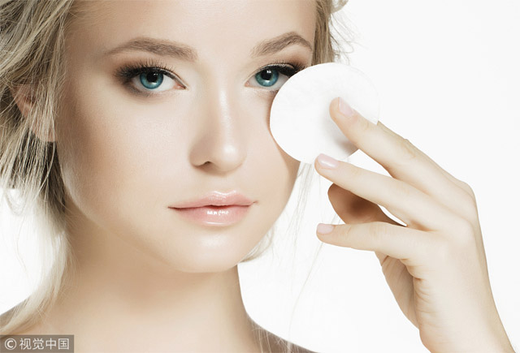
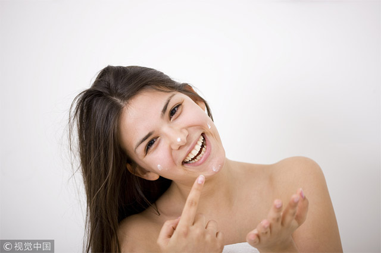

肌肤状态总是不好，不管使用什么产品都感觉不是很适合自己？先不要急着责怪产品，有可能是你自己没有get到正确的使用方法。

卸妆最重要的一步
评测一款卸妆产品好不好用，最重要的一点就是这款卸妆产品能否将妆容彻底卸除干净。但想要将妆容彻底卸净，除了选择好用的产品外，还需要使用正确的卸妆方法，不然使用再好的卸妆产品都是白费力气。
正确方法：许多人都对卸妆油、卸妆膏的使用方法有误区，该类产品真正的卸妆力并非展现在按摩阶段，而是在后期的乳化阶段。使用时需要用干净的双手将卸妆产品涂抹在脸上并轻轻打圈按摩，然后用温水洗净并沾湿双手，再次轻轻打圈按摩脸部，直至所有卸妆油全都变白乳化，此时妆容才算溶解完成，然后用温水洗净再使用洗面奶即可。
爽肤水的重要作用
爽肤水可能是基础护肤品中最被误解的一款产品，很多人认为爽肤水使用起来“收效甚微”，所以甚至会在护肤中省略爽肤水这一步骤。但实际上爽肤水在护肤中能够起到非常重要的一个作用——平衡肌肤酸碱值。肌肤的健康PH值大概在5.5左右，而大多洁面产品的PH值都在12左右。也就是说我们的肌肤的健康状态应该是呈弱酸性的，而大多洗面奶都呈较强碱性，所以洁面后肌肤的酸碱环境会被破坏。若让肌肤长期呈碱性状态很容易被细菌入侵引起发炎等问题，老废角质也会难以代谢，使肌肤失去平滑光泽质感。这时就需要爽肤水来帮助我们平衡肌肤PH值，快速帮助肌肤恢复健康环境。也就是我们使用爽肤水时经常说的“二次清洁”，二次清洁的含义并非再次清洁污垢，而是清洁和平衡肌肤上残留的强碱性产品。
正确用法：首选选用质地柔和、不易拉扯肌肤的化妆棉，将适量爽肤水倒在化妆棉上，顺着肌肤纹理轻轻向上提拉，二次清洁掉残留的强碱性产品。然后将化妆棉翻面，再沾取一些爽肤水，轻拍于面部肌肤，平衡酸碱值的同时为肌肤进行基础补水。

精华液的正确用法
精华液处于护肤步骤的第三环，一般应在洁面、爽肤水后使用。网传的精华液使用方式千奇百怪，比如厚涂精华液做面膜、将精华液当眼霜涂在眼周等等，而实际上这些方式对护肤都没有很大帮助，反而还容易造成肌肤负担。首先精华液的用量并非越多越好，过多的涂抹精华液会令肌肤难以吸收，形成肌肤负担。而在涂抹精华液时确实会带过眼周肌肤，但精华液并不能单独作为眼霜使用，它并没有祛除眼部细纹、黑眼圈等眼部产品特有的效果，如果想在眼周使用精华液，可以选择专业的眼部打底精华叠加眼霜使用。
正确方法：精华液一般在使用爽肤水打通肌肤吸收通道后使用，用量一般在3-5滴为最佳。将适量精华液滴于掌心，双手合十等待15秒，利用掌心温度充分激活精华成分后，将精华液均匀涂抹于面部，并顺着肌肤纹理轻轻提拉按摩，直至精华液吸收即可。